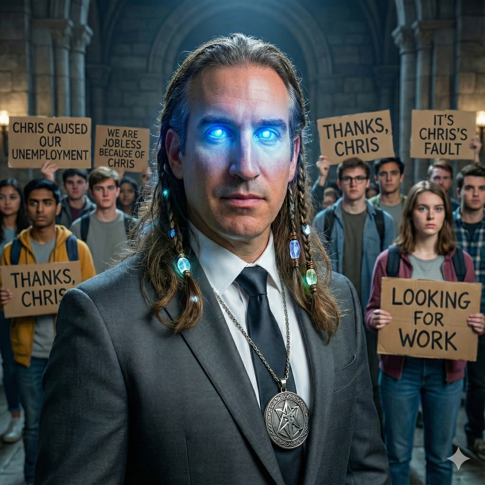
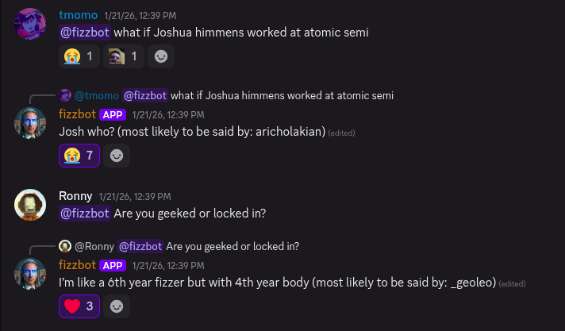

Fizzbot

Overview
Fizzbot is a Discord-style chat model trained on the third-year Discord server for my Engineering Physics cohort. The project started after a proof-of-concept at a Fizz talent show, where my friend Bram Banik demoed a simple test version. I wanted to see how far I could take the idea if I built the whole pipeline end-to-end: data prep, training, inference tooling, and an actual Discord bot.
Training runs on my friend Ronny Cravioto-Ross' DGX Spark, and everything else is designed so I can iterate locally without too much friction.
Under the hood, Fizzbot is a retraining effort on top of an existing base model rather than training from scratch. I chose Mistral-7B (v0.1) as the base because it gives a strong quality/size tradeoff and works well with QLoRA for faster iteration.
Project Overview
The basic loop looks like this:
- Export Discord logs (Discrub JSON).
- Clean and normalize messages into a consistent schema.
- Build training examples that preserve speaker identity using tokens like
<S0> ... <EOT>. - Train a causal language model (GPU/QLoRA when available, CPU smoke tests when not).
- Run inference either in a CLI for quick testing, or behind a Discord bot that replies when pinged.
My Contributions
This project has two halves (Python ML + Rust bot), and I worked across both.
- Built the data pipeline from raw Discrub exports to JSONL training examples.
- Added multi-speaker formatting with
<S#>tokens and<EOT>message boundaries. - Set up training scripts and YAML configs for both GPU/QLoRA runs and CPU smoke tests.
- Wrote an inference CLI with decoding so model output turns back into readable chat.
- Implemented the Rust Discord bot wrapper that spawns the model process and streams prompts/responses over stdin/stdout.
- Added Makefile + Docker helpers so it's easy to run locally or in a container.
Challenges
Some of the tricky parts were not the "train a model" step, but everything around it:
- Cleaning Discord data without deleting the personality.
- Preserving speaker identity across long contexts (and making the output decodable again).
- Keeping the bot integration reliable when the model process is slow, chatty, or crashes.
Technical Highlights
Data Pipeline
The generator converts Discrub exports into JSONL training examples:
- Normalizes messages into
{username, content, timestamp}. - Sorts by timestamp per channel.
- Builds
(context -> target)examples with randomized context windows. - Replaces usernames with speaker tokens
<S0>,<S1>, ... - Appends
<EOT>end markers to each message. - Outputs
train_data/training_examples.jsonlandtrain_data/speaker_map.json.
Training
Training is driven by YAML configs:
- GPU/QLoRA defaults in
llm/train_config.yaml(Mistral-7B, 4-bit). - Retraining uses LoRA adapters instead of a full fine-tune.
- CPU-friendly config in
llm/train_config_cpu.yamlfor fast smoke tests. - Outputs are stored under
llm/runs/<run_name>/<timestamp>/.
Inference CLI
The inference tool supports:
- Running the latest model or a specific checkpoint.
- Decoding
<S#>tokens back intousername: messageformat. - Interactive prompts for quick testing.
Discord Bot (Rust)
The Discord bot is built in Rust with Serenity and launches the LLM process as a child task:
- Spawns
make fizzbotand streams prompts/responses through stdin/stdout. - Maps Discord users to speaker tokens using
speaker_map.json. - Responds when mentioned, strips the mention, and prevents pings.
Repository
github.com/georgesleen/fizzbot-2
Other Media
